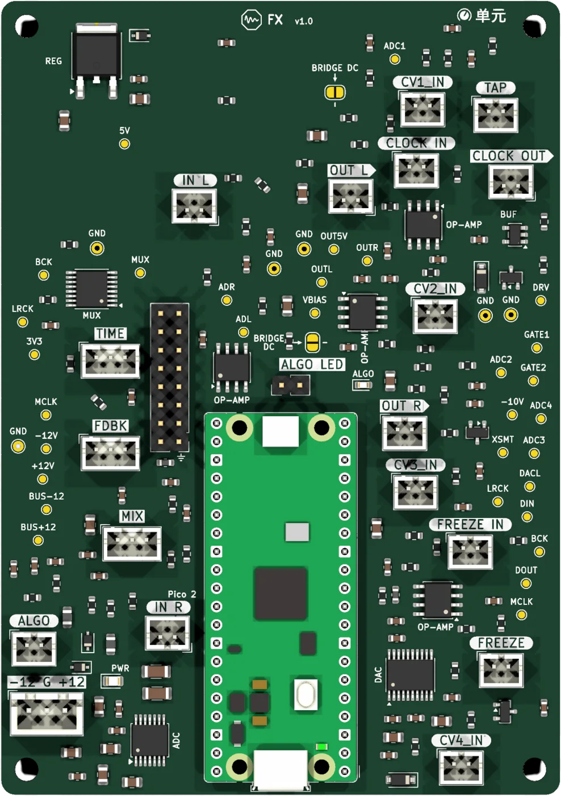
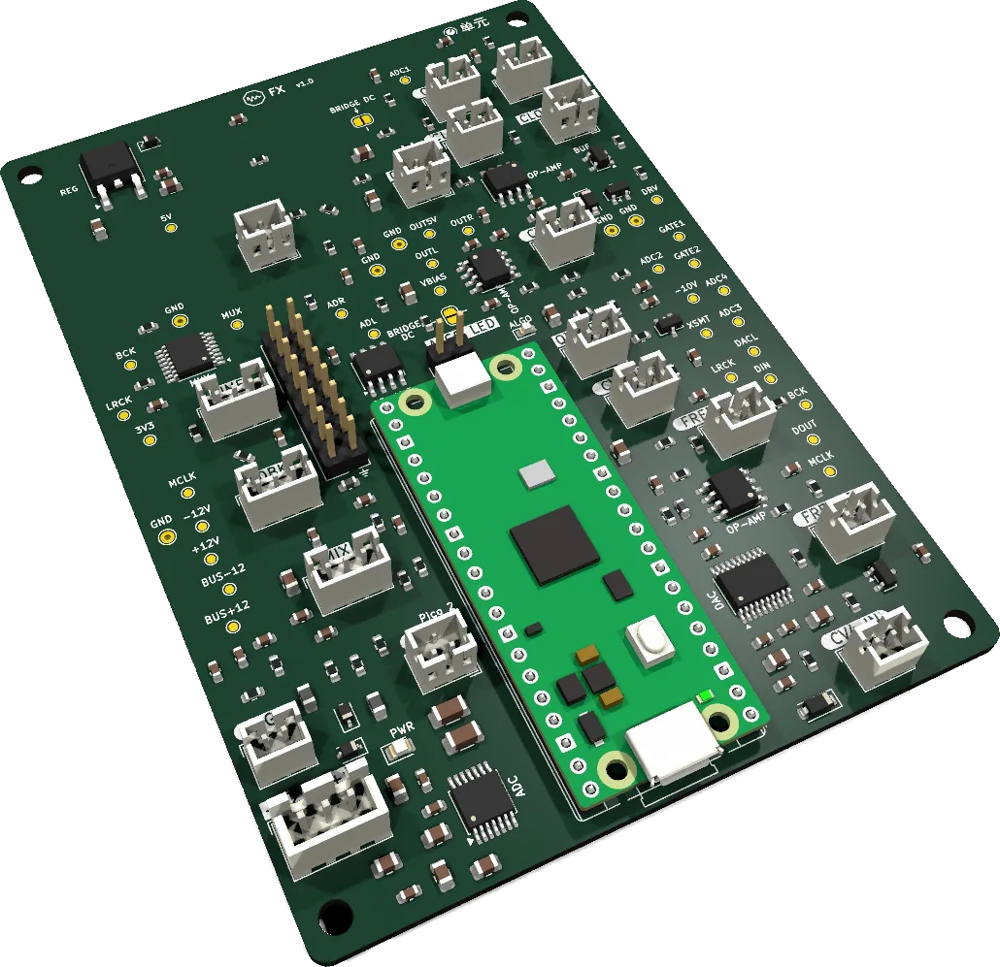
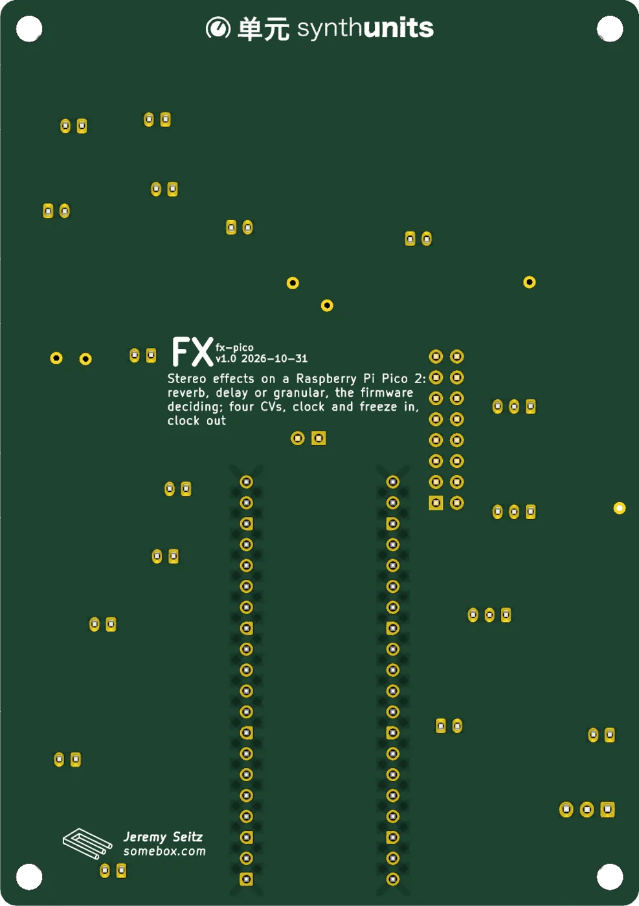
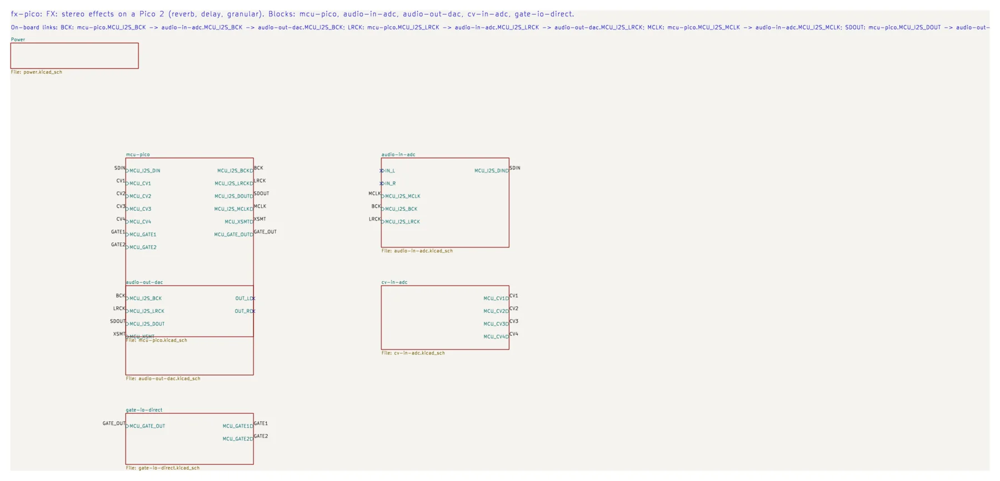
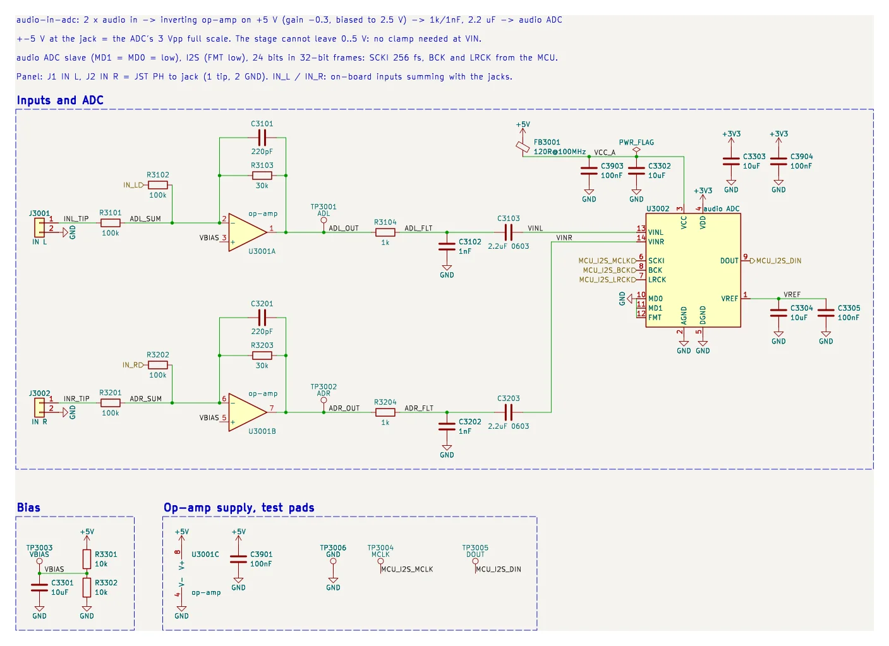
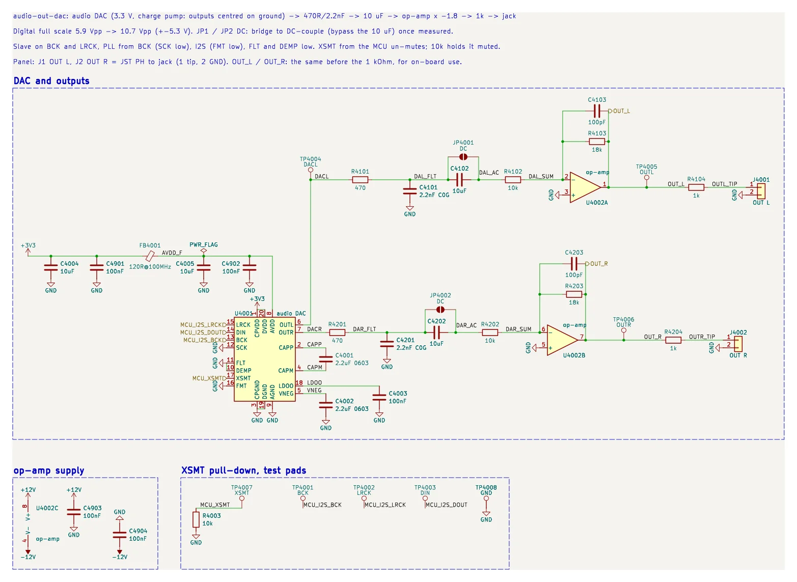
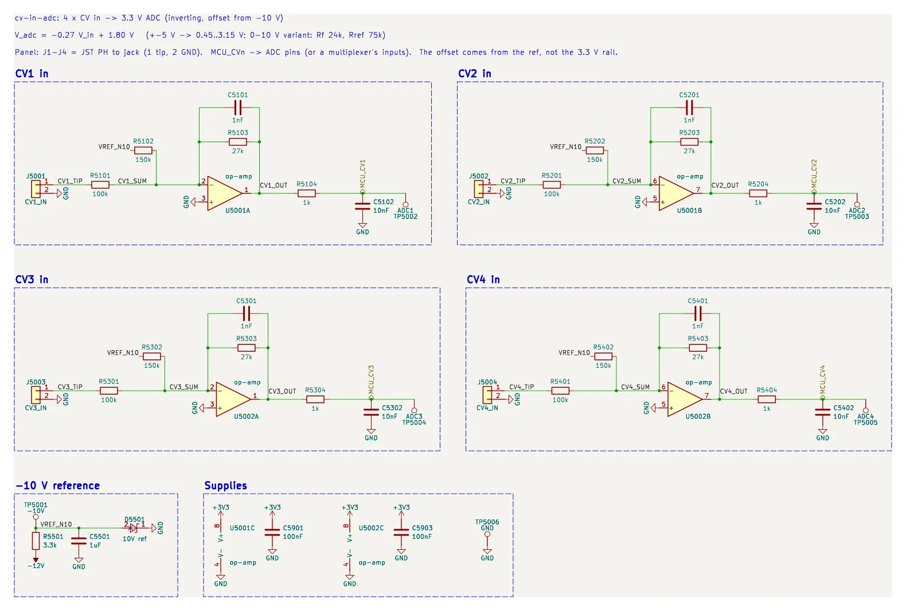
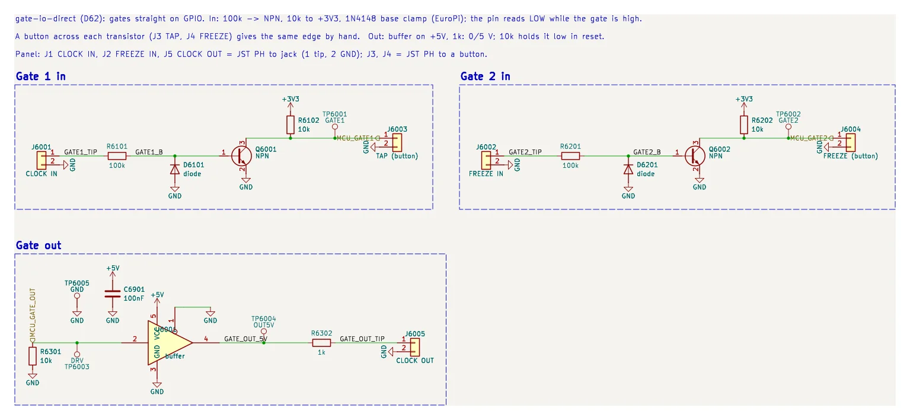
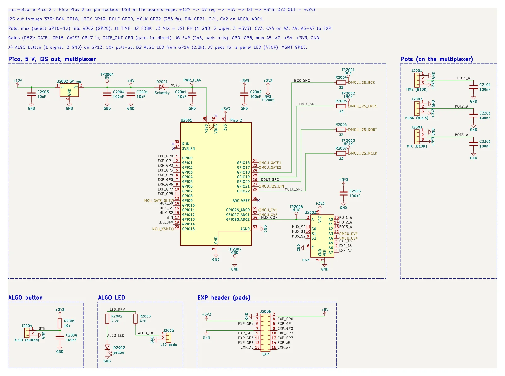

FX: stereo effects on a Pico 2 (reverb, delay, granular)
The first digital board: stereo in and out round a Raspberry Pi Pico 2, the effect chosen by its firmware.
The series' first digital board: a stereo effects module built round a Raspberry Pi Pico 2 in a socket, on a 77.5 × 110 mm board. Audio comes in through an inverting stage into a 24-bit stereo audio ADC, the Pico works on it, and a 32-bit stereo audio DAC with an op-amp stage brings it back to Eurorack level. Neither converter needs a driver: the Pico gives both their clocks over I2S.
The hardware doesn't commit to an effect. The plan is reverb, delay or granular as alternative firmware on the same board, picked with the ALGO button. Three pots (TIME, FDBK, MIX) and four CV inputs set the parameters; CLOCK IN and FREEZE IN, with TAP and FREEZE buttons across them, give the firmware edges within microseconds; CLOCK OUT passes a 0/5 V clock on.
The same socket takes a Pico Plus 2, with 8 MB of PSRAM, when an effect needs long delay lines. A socketed Pico was the quick way to prove the converters, the analog stages and the firmware; a core on the board itself can come later.
- Status
- In design: parts placed, not routed yet
- Board
- 77.5 × 110 mm, 2 layers



Block diagram
Drawn by the site's generator from the board's own data: its blocks, its connectors and the links between them. The pots and switches are listed in the block they set.
What it does
- Audio in: IN L and IN R, 100 kΩ; ±5 V (10 Vpp) fills the ADC. The stage runs on 5 V, so ±12 V at a jack only saturates it. It inverts, and the firmware flips it back.
- Audio out: OUT L and OUT R through 1 kΩ, about 10.7 Vpp at digital full scale; AC-coupled until the DAC's offset has been measured.
- Rates: 48 kHz for reverb and delay, 32 kHz for granular; 24-bit in, 32-bit out.
- CV1 to CV4: 100 kΩ, ±5 V mapped onto the Pico's 0 to 3.3 V ADC against a −10 V reference, so the reading doesn't follow the 3.3 V rail; ±12 V is safe. CV3 and CV4 are read through the pots' multiplexer.
- CLOCK IN and FREEZE IN: on at about 0.7 V, so 3.3, 5 and 10 V gates all read; safe at ±12 V.
- CLOCK OUT: 0/5 V through 1 kΩ, held low while the Pico is in reset.
- Controls: TIME, FDBK and MIX (Alpha 9 mm B10K); ALGO, TAP and FREEZE buttons; an ALGO LED.
- Power: about 150 mA on +12 V (a 5 V regulator feeds the Pico and the converters) and a few mA on −12 V, estimated.
- Board: 77.5 × 110 mm, 2 layers: 16 HP lying flat behind a panel, or 77.5 mm deep sideways on a sled.
Connections
| Connector | Wire to | Housing | Pins |
|---|---|---|---|
| POWER (1 -12V, 2 GND, 3 +12V) | a the power board output (straight-through JST XH lead) | JST XH, 3 pins, top entry | 1 −12 V, 2 GND, 3 +12 V |
| TIME (B10K) | a pot (Alpha 9 mm B10K) | JST PH, 3 pins, top entry | 1 CCW, 2 wiper, 3 CW |
| FDBK (B10K) | a pot (Alpha 9 mm B10K) | JST PH, 3 pins, top entry | 1 CCW, 2 wiper, 3 CW |
| MIX (B10K) | a pot (Alpha 9 mm B10K) | JST PH, 3 pins, top entry | 1 CCW, 2 wiper, 3 CW |
| ALGO (button) | a panel push button, wired by hand | JST PH, 2 pins, top entry | 1 signal, 2 GND (closing it: a gate) |
| IN L | a jack (Thonkiconn) | JST PH, 2 pins, top entry | 1 tip, 2 GND |
| IN R | a jack (Thonkiconn) | JST PH, 2 pins, top entry | 1 tip, 2 GND |
| OUT L | a jack (Thonkiconn) | JST PH, 2 pins, top entry | 1 tip, 2 GND |
| OUT R | a jack (Thonkiconn) | JST PH, 2 pins, top entry | 1 tip, 2 GND |
| CV1_IN | a jack (Thonkiconn) | JST PH, 2 pins, top entry | 1 tip, 2 GND |
| CV2_IN | a jack (Thonkiconn) | JST PH, 2 pins, top entry | 1 tip, 2 GND |
| CV3_IN | a jack (Thonkiconn) | JST PH, 2 pins, top entry | 1 tip, 2 GND |
| CV4_IN | a jack (Thonkiconn) | JST PH, 2 pins, top entry | 1 tip, 2 GND |
| CLOCK IN | a jack (Thonkiconn) | JST PH, 2 pins, top entry | 1 tip, 2 GND |
| FREEZE IN | a jack (Thonkiconn) | JST PH, 2 pins, top entry | 1 tip, 2 GND |
| TAP (button) | a panel push button, wired by hand | JST PH, 2 pins, top entry | 1 signal, 2 GND (closing it: a gate) |
| FREEZE (button) | a panel push button, wired by hand | JST PH, 2 pins, top entry | 1 signal, 2 GND (closing it: a gate) |
| CLOCK OUT | a jack (Thonkiconn) | JST PH, 2 pins, top entry | 1 tip, 2 GND |
Every panel control has its own connector with a fixed pinout, so any lead of the right size fits any module. Pin 1 is the square pad.
LEDs
On the board: PWR (green), ALGO (yellow). Pads for a panel LED: ALGO LED.
Wiring and setup
- Power: the same 3-pin JST XH lead (1 −12 V, 2 GND, 3 +12 V) from the power hub as every minimodule. The Pico can be on USB at the same time: a diode keeps the two supplies apart.
- The Pico sits in two 20-pin sockets with its USB at the board's bottom edge, for flashing with the module pulled out.
- Panel: 11 jacks (IN L, IN R, OUT L, OUT R, CV1 to CV4, CLOCK IN, FREEZE IN, CLOCK OUT), 3 Alpha 9 mm B10K pots (TIME, FDBK, MIX) and 3 push buttons (ALGO, TAP, FREEZE), each on its own top-entry JST PH connector: jacks and buttons 2-pin, pots 3-pin (1 CCW, 2 wiper, 3 CW).
- ALGO LED pads: a 3 mm white panel LED at about 1 mA, its resistor on the board.
- EXP header: 2 × 8 pins at 2.54 mm, pads only: nine spare GPIO (a UART for MIDI and an I2C bus among them), the multiplexer's three spare inputs, +5 V, +3.3 V and GND, for an expander board or a logic analyser at bring-up.
- No LINK connector and no trimmers: the CV inputs are calibrated in firmware, two points per channel (0 V and +2 V from a known source, say).
- A solder jumper per output, left open, DC-couples the DAC once its output has been shown to sit at 0 V.
Limits and open questions
- Not routed, not simulated, not built. The converter circuits follow their datasheets' typical applications; nothing here is measured.
- A trial route left two signals and many ground islands unconnected: with the Pico in the middle, everything crossing the board has to thread between its two rows of pins. The Pico moves to an edge, or the board widens, before the real route.
- Whether the input stage reaches the ADC's full scale on its 5 V rail without clipping is still to confirm; if not, its gain drops slightly.
- The outputs are AC-coupled, so they can't carry CV, until the DAC's offset is measured.
- At about 150 mA on +12 V it draws more than all the analog minimodules together: count it in the power budget. Its 5 V linear regulator dissipates about 1.1 W and needs copper under it.
- The clock inputs are a single transistor each: a slow or sagging clock might double-trigger them (a comparator is the fallback). No clock LED, and CLOCK OUT is 0/5 V only.
- In its socket the Pico adds about 12 mm of height, which may not fit a shallow case sideways. The Pico Plus 2's extra pins don't reach the socket.
- No panel layout yet.
Development notes
- It started from a survey of the open digital Eurorack modules and pedals. Every one uses the same inverting input cell and an output stage scaled to its converter, so this board does too. The converters are the pair rheslip's Pico DSP modules (MIT) use.
- The board grew in steps: two CV inputs, then four (two through the pots' multiplexer, since the Pico has no fourth ADC pin to spare), then the clock and freeze inputs, a clock output and the expansion header, then a 77.5 × 110 mm shape so it can go behind a panel.
- Firmware plan: reverb (a plate after Mutable Instruments' open-source one, and a feedback-delay-network reverb), delay (tape and ping-pong, synced to CLOCK IN or TAP) and granular (after Mutable Instruments' Clouds), each a firmware load on the same board. FREEZE holds the reverb or the grains; ALGO picks the effect.
- The audio stack, by type: an Arduino core for the Pico; an open audio-graph library, a port of the Teensy Audio library, for 32-bit I2S in and out at 48 kHz with a master clock; an open DSP library for reverbs, delays and chorus; Mutable Instruments' plate and Clouds code through an Arduino port; an open DSP library from Arm for FFTs. All MIT or Apache licensed. Planned for the Pico 2's stock clock, with overclocking in reserve.
- What the firmware still needs: all of it is still to write; the pin map is fixed. Then full-duplex I2S at 48 kHz with a 256× master clock, the multiplexer sweep for the pots and CV3 and CV4, CV calibration, gate edges on interrupts with the buttons debounced, un-muting the DAC once its clocks run, Clouds at 32 kHz beside the 48 kHz graph (or resampled), and a measurement of PSRAM random reads before a granular engine keeps its grains there.
- Later: a core on the board itself with its own PSRAM, and the same effect block inside bigger modules: a filter into a delay, a mixer with an effect send, a granular module with more CVs.
Schematic
The schematic as drawn, with each chip named by its function rather than its part number. The design isn't open source yet, so there are no files to download.













Would you use a FX? A thumbs-up on its tracking issue is how I count interest, and you can subscribe there to follow its bring-up. Questions and ideas go to the discussions.